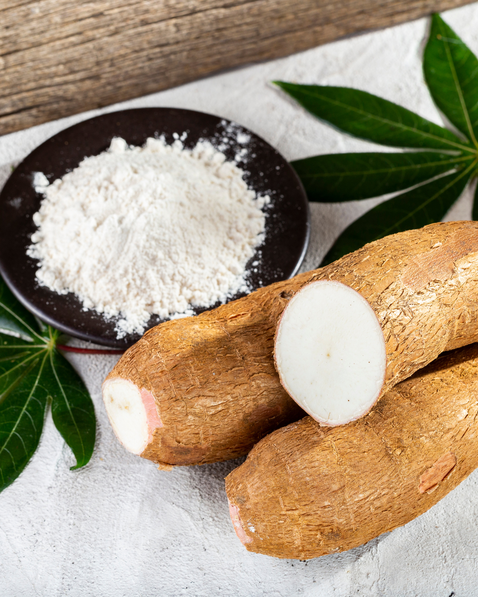
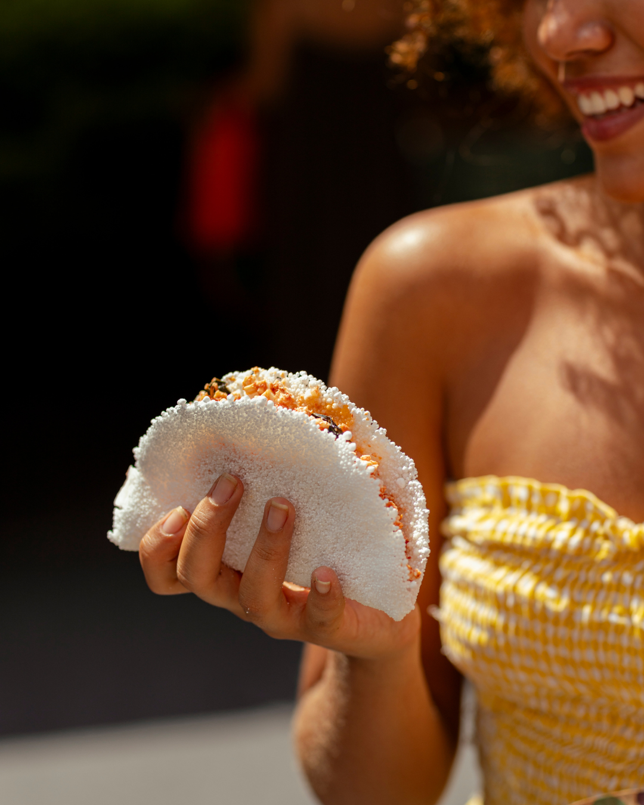

Bem-vindo ao OXENTE!
No coração da cultura nordestina, nosso restaurante é um verdadeiro convite para uma viagem gastronômica recheada de tradição, sabor e carinho. Aqui, valorizamos a essência da cozinha típica do Nordeste, trazendo para sua mesa o tempero marcante e autêntico que só essa terra sabe oferecer.
Nosso cardápio é uma celebração da culinária regional, com pratos como a carne de sol com macaxeira, o irresistível baião de dois, e a clássica feijoada nordestina. Para os amantes de um bom café da manhã reforçado, temos o tradicional cuscuz com queijo coalho, além de delícias como tapiocas recheadas e bolo de milho fresquinho.
Mais do que comida, queremos proporcionar uma experiência completa: o som da sanfona ao fundo, o aroma das especiarias no ar e um ambiente acolhedor, decorado com a alma e as cores vibrantes do Nordeste.
Seja para um almoço em família, um jantar especial ou aquele momento de nostalgia dos sabores da infância, o Sabores do Sertão está aqui para aquecer seu coração e deixar você com um gostinho de quero mais.
Venha nos visitar e sinta o sabor do Nordeste como nunca antes!

A macaxeira, também conhecida como mandioca ou aipim em outras regiões, é um dos ingredientes mais emblemáticos da culinária nordestina. Versátil e cheio de sabor, ela está presente em pratos tradicionais como a carne de sol com macaxeira, o famoso escondidinho, e até em receitas mais simples, como a macaxeira cozida com manteiga da terra. No Nordeste, a macaxeira é mais do que um alimento; é um símbolo de cultura, tradição e conforto, sempre preparada com aquele toque especial que só o povo nordestino sabe dar.

A tapioca é uma das estrelas da culinária nordestina, conhecida por sua simplicidade e versatilidade. Feita a partir da goma de mandioca, ela pode ser recheada com uma infinidade de sabores, desde os doces, como coco com leite condensado, até os salgados, como queijo coalho e carne de sol. Tradicionalmente servida no café da manhã ou no lanche, a tapioca é leve, deliciosa e carrega consigo a essência da cultura nordestina, sendo um verdadeiro símbolo da criatividade e dos sabores únicos dessa região.

A carne de sol é um ícone da culinária nordestina, famosa por seu sabor marcante e processo artesanal de preparo. Conservada com sal e exposta ao sol ou à ventilação, ela ganha uma textura única e um sabor irresistível. É a estrela de pratos clássicos como a carne de sol com macaxeira, o escondidinho e até acompanhada de arroz, feijão verde e manteiga da terra. Versátil e cheia de história, a carne de sol reflete a riqueza cultural e o espírito inventivo do povo nordestino.